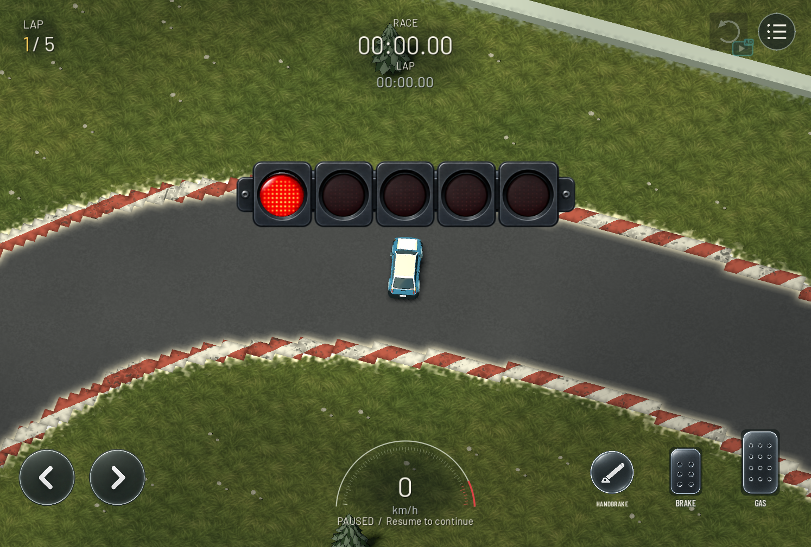
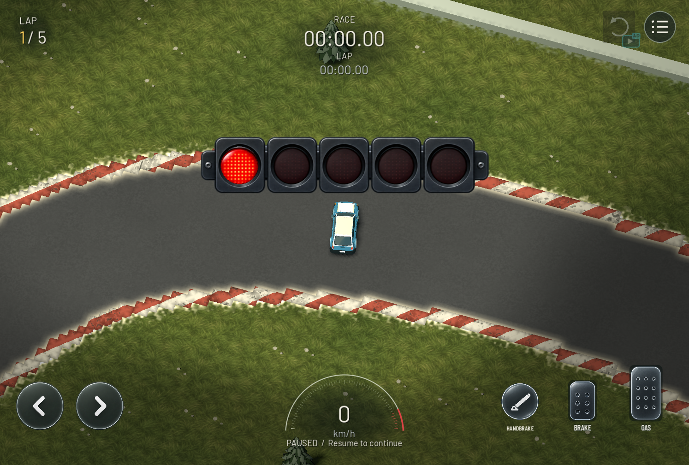

Grass sunlight and cloud shade
Before on the left, revised lighting on the right. Drag the divider to compare identical desktop views.


Scripted, paused desktop captures. Existing countdown and HUD retained. Phone and owner visual acceptance remain outstanding.